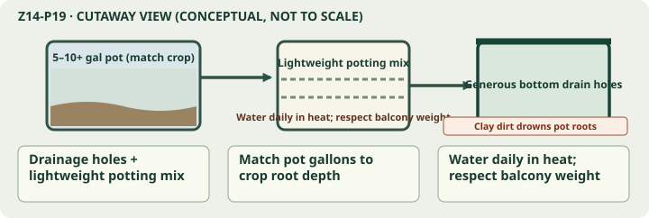

Z14-P19 · Food production and preservation · New manuscript
Adapt food production realistically for patios, balconies, and containers
Grow productive herbs, greens, bush beans, and compact tomatoes in small spaces without soil compaction or structural balcony overload.
When it applies · Apartments, townhomes, paved yards, or lead-impacted lots using pots, grow bags, or balcony planters.
Equipment · Clean drainage-hole containers (5+ gallons for tomatoes/peppers), lightweight commercial potting mix, and watering routine.

Actions
- Use lightweight, well-draining commercial potting mix (NEVER heavy backyard clay dirt, which turns brick-hard and suffocates container roots) inside containers with generous bottom drainage holes sized to the crop (shallow boxes for greens/herbs; 5–10+ gallon pots for dwarf tomatoes/peppers/potatoes).[P01, P02]
- Check moisture daily during hot windy summer weeks—containers dry out far faster than ground beds and require steady gentle feeding as frequent watering leaches soluble nutrients out the bottom.[P03]
- Respect apartment balcony structural weight limits (wet soil plus large waterlogged barrels weigh hundreds of pounds) and keep pots secured against high-rise wind gusts.[P01, U14]
Failure recognition · Filling a drainage-free decorative tub on a second-story wooden balcony with heavy wet clay soil that drowns roots and overloads railings.[P01, P02]
Verify · Confirm bottom drainage holes, lightweight potting mix, daily summer moisture check, and safe balcony weight distribution.[P01, P03]
Stop or change course · Standing soggy water at pot bottoms or sagging deck supports require immediate drainage correction or weight reduction.[P01]
Evidence and editorial notes
- P01 · University of Minnesota Extension · Planting the Vegetable Garden (current web edition)
- Section: Site Selection, Sunlight, Frost Dates, and Short-Season Planning · Conditions: Home vegetable gardening in Upper Midwest / Minnesota (USDA Zones 3–5)
Support: Select a sunny well-drained garden site receiving 6–8+ hours of direct sunlight, match crop days-to-maturity to local last-spring and first-autumn frost dates, and separate cool-season crops from frost-sensitive warm-season crops.
Limitations: Microclimates, low frost pockets, and soil clay/sand composition shift local planting windows by weeks. · Conflicting evidence: None; anchors regional Minnesota growing-season realism.
Editorial note: Grounds Z14 regional food production and frost-window planning. · Specialist reviewer: Horticulture and university Extension specialist
Primary source · checked 2026-11-24 - P02 · University of Minnesota Extension · Planting the Vegetable Garden (current web edition)
- Section: Soil Preparation, Testing, Compost, and Safe Fertility · Conditions: Residential garden beds and small-acreage food plots
Support: Test garden soil through an accredited lab (e.g., UMN Soil Testing Lab) before heavy amending to determine pH, nutrients, and urban lead risk; incorporate finished compost and avoid applying raw animal manure immediately before harvesting edible crops.
Limitations: Urban soils near older painted buildings or roads may contain legacy lead requiring raised beds and clean soil barriers. · Conflicting evidence: None; links soil fertility to food-safety contamination prevention.
Editorial note: Separates safe composted soil building from pathogen/heavy-metal hazards. · Specialist reviewer: Soil science and Extension horticulture
Primary source · checked 2026-11-24 - P03 · University of Minnesota Extension · Planting the Vegetable Garden (current web edition)
- Section: Watering, Mulching, Crop Rotation, and Integrated Pest Management · Conditions: Home vegetable plots across seasonal dry/wet swings
Support: Water deeply at the soil base rather than overhead foliage to conserve moisture and curb fungal disease, mulch soil to stabilize temperature and weeds, rotate plant families across seasons, and identify pests before choosing least-toxic controls.
Limitations: Untreated rainwater or suspect surface water should not be splashed onto ready-to-eat leafy crops immediately before harvest. · Conflicting evidence: None; aligns with FSG-4 clean produce handling.
Editorial note: Grounds resilient low-input gardening and biological pest management. · Specialist reviewer: Extension horticulture and integrated pest management
Primary source · checked 2026-11-24 - U14 · FEMA / Ready.gov · Make a Plan (current web edition)
- Section: Household Emergency Planning, Utility Maps, and Outage Checklists · Conditions: Pre-outage residential documentation and household drills
Support: Document main water, electrical panel, and gas shutoff locations, utility outage phone numbers, medical power registries, and neighborhood check-in networks on paper before storms hit.
Limitations: Utility medical-priority lists do not guarantee uninterrupted power during major ice storms or grid blackouts. · Conflicting evidence: None; bridges Z01 planning with Z13 household infrastructure.
Editorial note: Grounds household utility mapping and vulnerable-occupant contingencies. · Specialist reviewer: Emergency management and accessibility specialist
Primary source · checked 2026-11-24
Source lineage · UMN Extension Planting the Vegetable Garden; new manuscript · Classification · New manuscript.